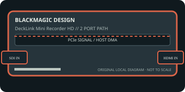

[ INDIVIDUAL COMPONENT // EXPANSION CARDS ]
Blackmagic Design DeckLink Mini Recorder HD
Single-channel PCIe ingest with one 3G-SDI and one HDMI input. This static reference distinguishes documented card I/O from host software, codecs, and external signal paths.

IDENTIFICATION: Match the exact SKU, model marking, part number, board revision, bracket and connector layout to manufacturer documentation. Similar family names do not imply interchangeable ports, firmware or support.
Capture, playback and compatibility specifications
| Exact model / SKU | DeckLink Mini Recorder HD — verify the marking and revision on the physical card. |
|---|---|
| PCI/PCIe bus and lanes | PCI Express 2.0 x1; use a compatible x1 or longer slot with the required lane available. Included bracket variants and actual host wiring should be checked before installation. |
| Digital video inputs | One 3G-SDI BNC input and one HDMI input; they are alternative capture sources, not two simultaneous capture channels. Embedded audio is carried with the selected digital input. |
| Analog ports | No analog video input or output. SDI reference/sync is not an analog picture input. |
| Input formats | SD and HD through 1080p60, plus supported 2K DCI timings up to 2Kp60 as listed by the current DeckLink format table. SDI is 3G-SDI; HDMI timing/color support is bounded by the model tech specs. |
| Output formats and connectors | No video output connectors; this SKU is capture-only. Captured frames are delivered to the host as supported uncompressed pixel formats; the card does not produce a media-file output by itself. |
| Encoding and driver model | No onboard file encoder. Uncompressed 8/10-bit video capture is exposed through Desktop Video APIs; ProRes, DNx, H.264 or other file encoding, where available, is performed by host software. |
| Operating-system compatibility | Blackmagic Desktop Video drivers are required. Blackmagic lists macOS, Windows and Linux support for the DeckLink family; verify the current installer matrix and OS build for this legacy board before deployment. |
| Software | Blackmagic Desktop Video Utility and Media Express; supported third-party capture applications can use the DeckLink interface. Confirm that the application still supports this specific generation. |
| Power and cooling | Compact PCIe-slot-powered card; the manufacturer tech page does not publish a universal maximum draw for every revision. Confirm the board revision, slot power budget and airflow; do not infer consumption from slot length. |
| Firmware caveat | Desktop Video may initialize/update card firmware during installation or boot. Use a release that explicitly supports this model, preserve a rollback path, and never interrupt a firmware operation. |
Integration notes and limitations
- HDMI/SDI input formats must match the source; content protection and unsupported timings can prevent capture. The two inputs do not create a two-channel recorder.
- Verify physical slot fit, PCIe lane wiring, BIOS/UEFI enumeration, host bandwidth and driver support together; a longer slot does not guarantee the electrical width the card needs.
- Record the board revision, firmware/driver versions, OS build, application, signal standard, source timing and tested pixel format as part of commissioning.
- Distinguish a video transport/pixel format from a compressed file codec. Unless the manufacturer explicitly states hardware encoding, codec creation and recording are host-application tasks.
Manufacturer sources and support
- Blackmagic Design — DeckLink Mini Recorder HD technical specificationsManufacturer source; consult the exact model/revision and software-release notes before installation.
- Blackmagic Design — Desktop Video downloads, manuals and release notesManufacturer source; consult the exact model/revision and software-release notes before installation.
Product revisions, driver support and application integrations change over time; manufacturer documentation for the exact card takes precedence over generic family-level guidance.